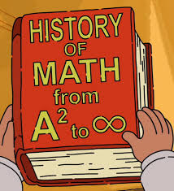
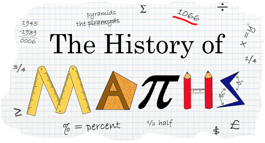

History Of Math
Discovered Or Invented?
So we all know that Math is very important, but how did it originate? Who invented it? Was it even invented or discovered? No one knows for sure how Math has originated. However, according to the Huffington Post, Math was invented and not discovered because it consists of rules that we have purposely created instead of rules that naturally happen. It's the result of our human consciousness and we've built Math to make our tasks more convenient.


Major Math Events
- 70,000 B.C.- In South Africa, geometric patterns are carved into ochre rocks.
- 600-300 B.C.- Greeks are utilizing their own methods of Math such as Euclid's Elements.
- 530 B.C.- Pythagoras studies geometry resulting in his discovery of the irrationality of square root two.
- 1st Century- Square roots of negative numbers such as “i” are referenced.
- 500- Trigonometric functions and the concepts of sine and cosine are introduced.
- 820- Al-Khwarizmi, a Persian mathematician, introduces the concepts of algebra to solve linear and quadratic equations.
- 1020- Math is split into 4 major strands, geometry, astronomy, arithmetic, and music.
- 1202- The Fibonacci sequence is introduced.
- 1647- Fermat claims the theorem, xn+yn=zn where x, y, and z are positive integers and n is an integer greater than 2, has no solution.
- 1727- Euler introduces his constant “e”.
- 1735- Euler introduces the notation f(x).
- 1748- Euler introduces the equation eiπ+1=0.
- 1768- Lambert proves π is irrational.
- 1824- Steiner develops synthetic geometry.
- 1901- Planck proposes quantum theory.
- 1936- Turing makes a theoretical machine called the “Bombe” which develops the theory of computability.
- 1999- Wiles proves Fermat's Last Theorem has no solutions.
If you want more information about the history of Math click here.